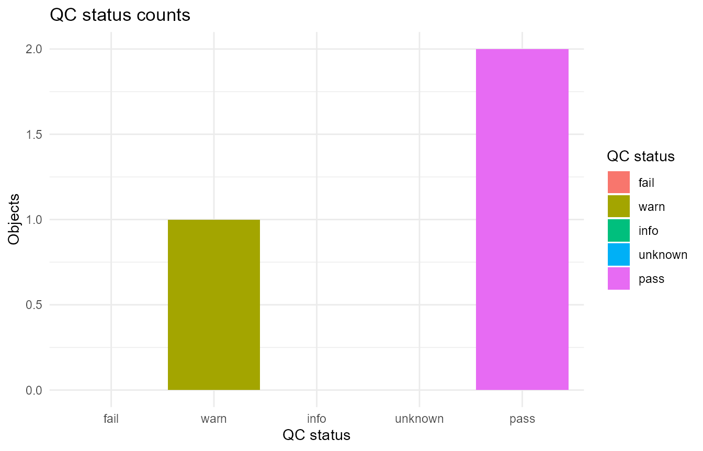
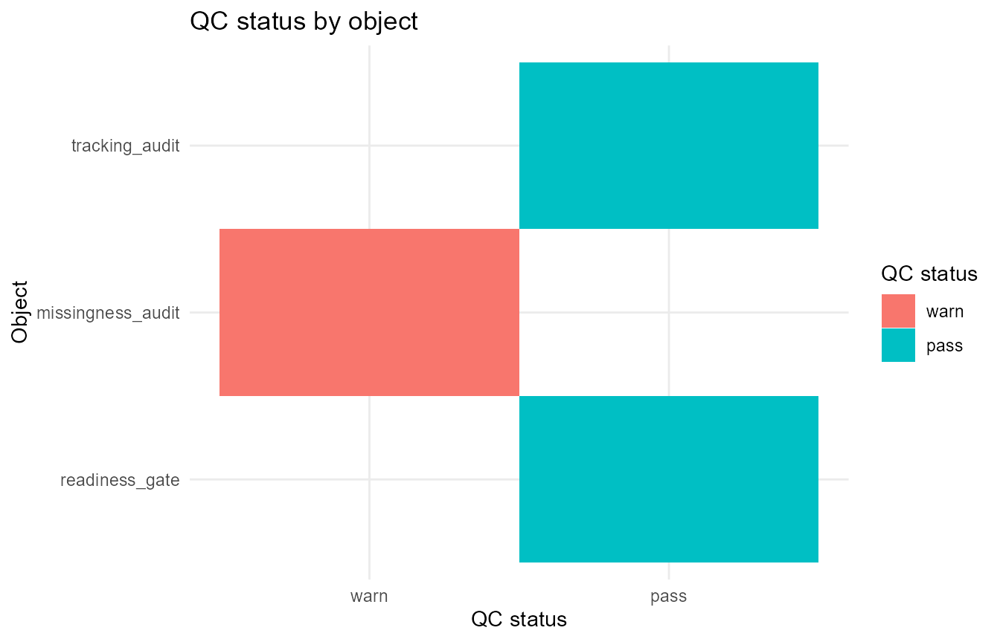

This article demonstrates lightweight helpers for collecting existing gp3tools quality-control outputs into a compact overview. The QC bundle is a reporting aid. It does not rerun audits, define exclusion rules, or replace readiness gates, reporting checklists, or study-specific decisions.
Example QC objects
The collector works with gp3tools-style objects that contain an
overview table, as well as standalone overview data
frames.
tracking_audit <- list(
overview = data.frame(
audit_status = "ok",
message = "Tracking-quality checks passed.",
stringsAsFactors = FALSE
)
)
missingness_audit <- list(
overview = data.frame(
audit_status = "review",
message = "Missingness should be reported by condition.",
stringsAsFactors = FALSE
)
)
readiness_gate <- list(
overview = data.frame(
readiness_status = "ready",
decision_message = "Ready for analysis review.",
stringsAsFactors = FALSE
)
)
qc_objects <- list(
tracking_audit = tracking_audit,
missingness_audit = missingness_audit,
readiness_gate = readiness_gate
)Collect QC summaries
collect_gazepoint_qc_summaries() extracts interpretable
status and message information from supplied objects.
qc_bundle <- collect_gazepoint_qc_summaries(qc_objects)
qc_bundle$overview
#> object_name n_objects n_overview_rows n_pass n_warn n_fail
#> 1 gazepoint_qc_summary_bundle 3 3 2 1 0
#> n_info n_unknown qc_bundle_status
#> 1 0 0 warn
qc_bundle$object_summary
#> object_name object_index object_class overview_available
#> 1 tracking_audit 1 list TRUE
#> 2 missingness_audit 2 list TRUE
#> 3 readiness_gate 3 list TRUE
#> n_overview_rows status_columns message_columns qc_status
#> 1 1 audit_status message pass
#> 2 1 audit_status message warn
#> 3 1 readiness_status decision_message pass
#> qc_message
#> 1 Tracking-quality checks passed.
#> 2 Missingness should be reported by condition.
#> 3 Ready for analysis review.
qc_bundle$status_counts
#> qc_status n_objects
#> pass pass 2
#> warn warn 1
#> fail fail 0
#> info info 0
#> unknown unknown 0When requested, the function also keeps a combined long-form table of available overview rows.
head(qc_bundle$overview_rows)
#> .gp3_qc_object_name .gp3_qc_object_index .gp3_qc_row audit_status
#> 1 tracking_audit 1 1 ok
#> 2 missingness_audit 2 1 review
#> 3 readiness_gate 3 1 <NA>
#> message readiness_status
#> 1 Tracking-quality checks passed. <NA>
#> 2 Missingness should be reported by condition. <NA>
#> 3 <NA> ready
#> decision_message
#> 1 <NA>
#> 2 <NA>
#> 3 Ready for analysis review.Summarise QC status
summarize_gazepoint_qc_status() produces a compact
status summary from a bundle, an object-summary table, or a raw list of
objects.
qc_status <- summarize_gazepoint_qc_status(qc_bundle)
qc_status$overview
#> n_objects n_pass n_warn n_fail n_info n_unknown qc_overview_status
#> 1 3 2 1 0 0 0 warnThe British spelling alias is also available.
summarise_gazepoint_qc_status(qc_bundle)$status_counts
#> qc_status n_objects
#> pass pass 2
#> warn warn 1
#> fail fail 0
#> info info 0
#> unknown unknown 0Plot QC overview
plot_gazepoint_qc_overview() can show status counts.
plot_gazepoint_qc_overview(
qc_bundle,
plot_type = "status_counts",
title = "QC status counts"
)
It can also show object-level status.
plot_gazepoint_qc_overview(
qc_bundle,
plot_type = "objects",
title = "QC status by object"
)
Generate cautious report text
report_gazepoint_qc_overview() returns compact text for
reporting support.
qc_report <- report_gazepoint_qc_overview(qc_bundle)
qc_report$report_text
#> [1] "QC overview collected 3 object(s): 2 pass, 1 warn, 0 fail, 0 info, and 0 unknown. Overall QC overview status was 'warn'. Object(s) needing review or interpretation: missingness_audit. This overview is a reporting aid only; it does not replace the underlying audit outputs, readiness gates, or exclusion decisions."The generated wording is deliberately cautious. The QC overview describes available outputs and interpreted status patterns; it should be read together with the underlying audit tables, readiness gates, exclusion recommendations, and reporting checklist.
Suggested workflow
A transparent QC-reporting workflow is:
- Run the relevant gp3tools audits, checks, summaries, and reporting helpers.
- Collect their overview tables into a QC bundle.
- Inspect the status summary and object-level messages.
- Use the plot and report text as a compact review aid.
- Keep final exclusion, imputation, modelling, and manuscript decisions separate from the overview itself.